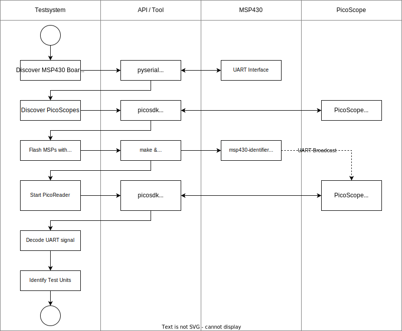
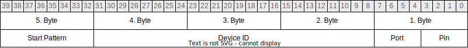

Test Unit discovery
The discovery process is an integral part of the test system. It is executed during startup and looks for available MSP430 boards and PicoScopes to further combine them into Test Units. Once the test system discovers some devices, it tries to detect which PicoScope channel is connected to which MSP430 pin. Finding connections is not a trivial task because many possible configurations exist. For example, a PicoScope can connect to different MSP430 boards, and an MSP can connect to different PicoScopes, already giving us an M-to-N relation for possible connections. Further, it is also possible that a single MSP430 pin is connected to multiple channels or even multiple PicoScopes. The test system needs to be aware of the physical structure of the testing hardware so it can correctly combine devices to test units. The following figure schematically depicts the process flow and shows which components are involved in the individual steps. The following sections then provide an in-depth description of these steps.
Discover MSP430 boards
Discovering MSP430 boards is done by checking for available COM ports.
The test system, therefore, uses the pyserial python library, which has a convenient function to list connected devices.
The returned objects give detailed information about the device, like serial number, interface, manufacturer, and product details.
The system then checks if the interface belongs to an MSP430 board.
Each MSP has two COM ports.
One debug interface and one UART interface.
Both ports must be available for an MSP to be used by the test system.
You will get a warning message in the logs if only one port is connected.
Note
Make sure that all required ports are actually mapped into the docker container. Otherwise, the test system won’t be able to use the boards. These ports are usually listed as /dev/ttyACM devices, followed by a consecutive number.
Discover PicoScopes
Discovering PicoScopes is similar to the discovery process of MSP430 boards, but in this case,
the test system uses the picosdk python wrapper library instead of pyserial.
This library is a wrapper for the picosdk implemented in C.
This SDK provides a function to look for connected PicoScopes and get them by serial number.
The MSP discovery routine will not detect PicoScopes because they are listed as USB devices.
Note
Make sure that all PicoScopes are actually mapped into the docker container.
Otherwise, the test system won’t be able to use them.
To check the PicoScope ports on the host system, you can use the lsusb command, which is part of the usbutils package.
Discover Connections
Because of the already mentioned variety of possible connections, the test system must work with the minor connector type on both devices. On the MSP430, the smalles unit is called a pin (combined with a port, e.g., Port 6 Pin 1 = 6.1), and for the PicoScope, this would be a channel (D0 - D15).
Note
It is worth noting that the current implementation only detects connections to digital channels, but extending the functionality to analog channels would be easily possible. Just convert the received analog data from the PicoScope to a digital value of 0 or 1 and handle them like the other digital channels.
The idea of discovering connections is that the MSP boards should identify themselves with a known identifier and the PicoScopes listen for such messages. Therefore, each MSP pin requires a unique id which the board will continuously broadcast as a UART signal. This constraint means that each MSP430F5529 will broadcast 48 different ids, one for each pin. Though this board has a UART hardware module, it is not possible to use it in this case because each pin must send its id concurrently to detect connections efficiently. Therefore, the test system flashes the MSP with an identifier program that implements UART in software. A comprehensive description of this program is in section Identifier Program.
A pin identification number, further just called id, is a 40-bit number of the following form:
The Start Pattern is fixed and identical for all ids and does not occur in the device id.
It is defined as 0xFE, so it does not occur in the port-/pin-byte because the MSP430F5529 has only eight ports with eight pins each.
The pattern helps to find the start of an id on the receiver side and contributes to reliable results.
The number then contains a 24-bit Device ID.
This Device ID is unique for each MSP430 board. 24-bit should be enough to identify all physically possible connected MSPs uniquely.
The port number is the upper 4-bits of the least significant byte, and the lower 4-bits describe the pin number.
Note
The MSP transmits this 40-bit id to the PicoScope in UART protocol, starting with the most significant byte (5th byte). On the other hand, the individual bytes are transmitted according to the UART standard, beginning with the least significant bit.
An example for an id:
Example ID = 0xFEDEF1CE61
- Start Pattern = 0xFE
- Device ID = 0xDEF1CE
- Port = 0x6 = 6
- Pin = 0x1 = 1
The transmission rate is relatively low, with only 1200 baud. Even though a slightly higher rate would be possible (2400 baud or even 4800 baud), the correct timing of the signal is crucial for a reliable system. The reason for that is the software-controlled UART which requires significant computation time for output generation. On the other hand, a high transmission rate does not improve the performance because even on low 1200 baud, the transmission of a complete id only takes about 100ms (5 bytes with transmission pauses), which is neglectable to the times needed to flash the identifier programs and to configure the PicoScopes.
Identifier Program
The msp430-identifier program is a small C program located in a subdirectory in the test system (testsystem/msp430-identifier/).
This directory also contains a makefile ready to build and flash the identifier program onto MSPs.
The program depends on the libmsp430 library and requires a script for linking,
but the include and library paths are already preconfigured with environment variables when run with the docker container.
This program’s goal is to transmit a unique id on each pin continuously. The program uses the UART protocol entirely implemented in software with a timer interrupt to achieve this. The timing is crucial for a solid UART signal. Therefore, the only job of the interrupt service routine is incrementing a counter. An increment can be done in almost no time and does not risk possible delays caused by intense computational tasks. A continuous loop calls the output logic with the current counter value and generates the signal. The advantage of this design is a precise clock for the UART signal (implemented as a counter) at the cost of a delayed output logic. The output delay is not a problem for the given setup with baud rates around a few 1000 because the sampling happens half-time through the bit. If the timer interrupt directly calls the output logic, it would skew the output to an unreadable signal because of the required computation time.
Note
The transmitted UART signal has a baud rate of 1200, with 8 data bits, one stop bit, and no parity.
The C program file main.c has a placeholder for the device id.
The discovery process loads this file and uses it as a template to generate a version for each available MSP430.
After the test system has flashed the program to the MSP, the msp430-identifier starts by configuring the ports and timer.
It then enters the continuous broadcasting mode, where it first transmits the Start Pattern and Device ID
and then uses a lookup table to write the port and pin identifier as whole bytes to the ports.
Once the program has sent all 40-bits, it waits for some time (~100ms) before it starts again.
Pico Reader
The PicoReader is a python class serving as an interface
to the PicoScope hardware during the discovery process.
It requires a PicoScope instance and returns a list of received bytes for each channel.
The PicoReader handles the setup and configuration for the PicoScope, reads the streamed data from the scope,
and decodes the UART signal into a list of bytes for identification.
The test system then compares the read ids with the known ids flashed to the MSPs.
Identifying connections is a trivial task once the ids are in easy processable byte form.
The PicoReader captures around 500ms of signal on all digital ports
and checks if all received ids on a channel are identical to prevent false or missing connections.
It uses the Start Pattern to identify the beginning of an id and streams the data into the respective UART decoder to get the byte list.